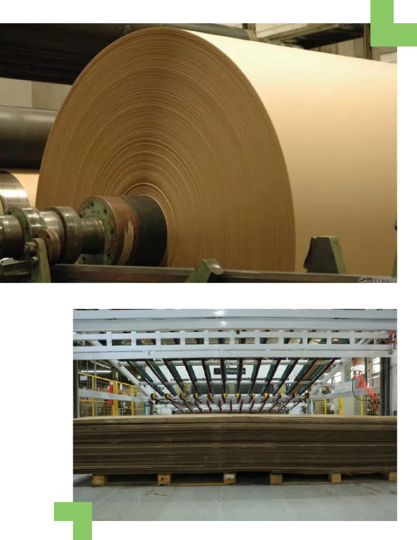
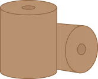
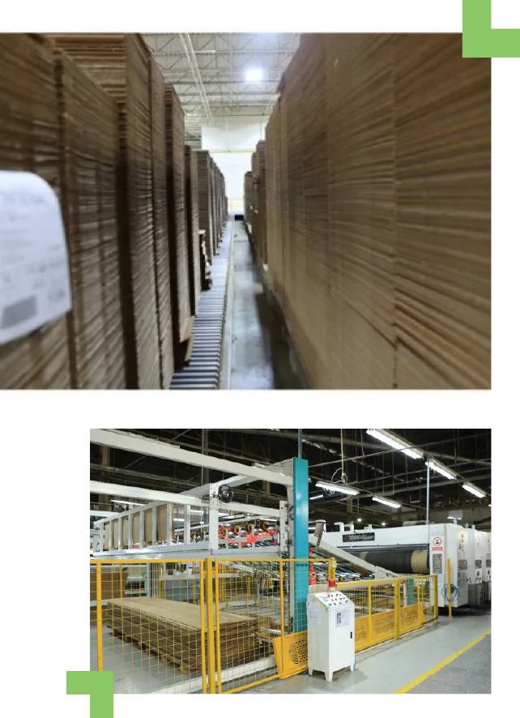
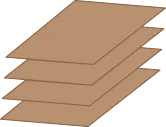
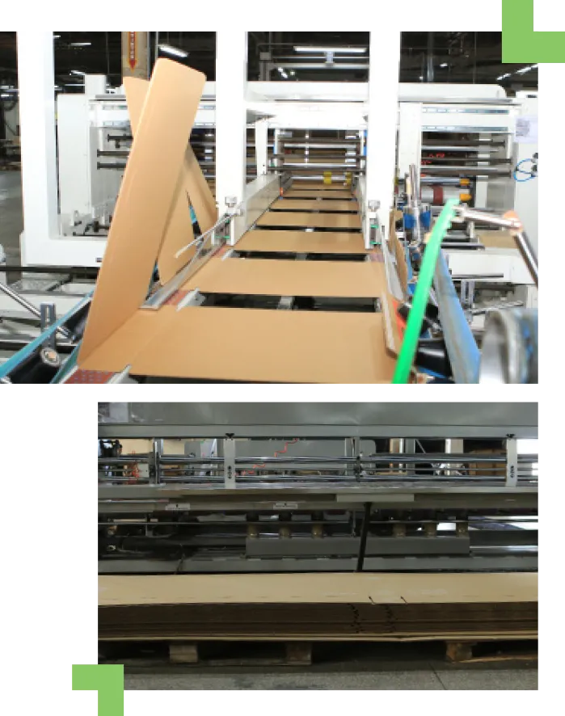
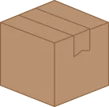

Produtos


Papel
A PCE é mais que uma fábrica de embalagens, somos uma fábrica de cuidado. Por isso, para ter certeza de que tudo está dentro de nossos padrões de qualidade e sustentabilidade, estamos presentes em todas as fases do processo, desde o início. Inclusive fabricando o papel que utilizamos nas embalagens.
E você também pode optar por essa solução.
Nossas bobinas de papel são certificadas em normas de cadeia de custódia. Isso signfica que você pode ter certeza de que utilizamos matérias-primas recicladas e de fontes certificadas na produção dos nossos papeis.
CONHEÇA ABAIXO AS OPÇÕES DE PAPEL
QUE FABRICAMOS ATUALMENTE.
E você também pode optar por essa solução.
Nossas bobinas de papel são certificadas em normas de cadeia de custódia. Isso signfica que você pode ter certeza de que utilizamos matérias-primas recicladas e de fontes certificadas na produção dos nossos papeis.
CONHEÇA ABAIXO AS OPÇÕES DE PAPEL
QUE FABRICAMOS ATUALMENTE.
KRAFT
É um dos mais resistentes e usados na indústria. O papel é constituído de fibras longas extraídas de árvores cultivadas em reflorestamentos. Geralmente, não passa
por processos de branqueamento, por isso, ele é reconhecido também pela sua cor parda natural.
por processos de branqueamento, por isso, ele é reconhecido também pela sua cor parda natural.
RECICLADO
É o tipo de papelão mais utilizado atualmente, devido ao seu custo-benefício. Além disso, tem uma excelente resistência.
TESTLINER
É a modalidade que corresponde ao meio termo do reciclado e kraft. Esse material é composto tanto de fibras quanto de material reciclado.
MIOLO
Papel ondulado, utilizado no miolo da chapa de papelão.
cotar esse produto


Chapas
Como tudo o que fazemos, as chapas de papelão ondulado comercializadas pela PCE também são fabricadas de acordo com elevados padrões de qualidade e sempre respeitando o meio ambiente. São produtos feitos com matérias-primas sustentáveis e passíveis de reciclagem.
O modelo de ondulação determina o tipo de produto que vai ser embalado. O papelão ondulado é a estrutura em forma de placa composta por um ou dois elementos ondulados (miolos) fixados a um ou mais elementos planos (capa).
ABAIXO, OS TIPOS DE CHAPAS QUE VOCÊ PODE ENCONTRAR NA PCE.PARA FICAR MAIS CLARO, AS LETRAS REPRESENTAM UMA REFERÊNCIA PARA A ESPESSURA DA CHAPA
O modelo de ondulação determina o tipo de produto que vai ser embalado. O papelão ondulado é a estrutura em forma de placa composta por um ou dois elementos ondulados (miolos) fixados a um ou mais elementos planos (capa).
ABAIXO, OS TIPOS DE CHAPAS QUE VOCÊ PODE ENCONTRAR NA PCE.PARA FICAR MAIS CLARO, AS LETRAS REPRESENTAM UMA REFERÊNCIA PARA A ESPESSURA DA CHAPA
Onda b
Conhecido como chapa de papelão simples de espessura menor, tem duas capas e somente um miolo as separando, com 2,5 a 3 mm de espessura.
onda C
Conhecido como chapa de papelão simples de espessura maior, tem duas capas e somente um miolo as separando, com 3,5 a 4 de espessura.
onda BC
Conhecido como chapa de papelão de onda dupla, consiste na junção da Onda B e Onda C, acopladas em uma mesma estrutura. Dessa forma, possui três camadas de capa, com 5,9 a 7,2 mm de espessura.
Onda E
Mais chamado de micro-ondulado, tem as mesmas características da onda B e Onda C. Sua grande diferença é que possui onda baixa e sua aplicação é voltada para caixas de menor tamanho.
Onda EC
Tipo de onda para quem necessita de espaço logístico em seus transportes. A PCE é a única empresa que fabrica esse tipo de papelão em Manaus.
cotar esse produto


caixas de papelão
As caixas são nosso produto final e com maior valor agregado. Produzidas com ondas simples ou duplas, a partir de papeis reciclados e biodegradáveis com alto padrão de qualidade. Tanto que são certificadas na norma ISO 9001.
CONFIRA OS TIPOS DE EMBALAGENS QUE TEMOS
A OFERECER PARA O SEU PRODUTO.
CONFIRA OS TIPOS DE EMBALAGENS QUE TEMOS
A OFERECER PARA O SEU PRODUTO.
flex
Essas caixas são produzidas nos padrões das caixas dos Correios. São de fácil armazenamento e contam com encaixes para montagem, que as tornam bastante resistentes e ajudam a proteger ainda mais o conteúdo durante o transporte.
corte vinco
Nessa modalidade, a embalagem é submetida a um moderno procedimento de corte e vinco em sua confecção, proporcionando um resultado de acabamento único e funcional, além de facilitar um transporte protegido, caso seja necessária a locomoção. O processo de corte vinco ainda proporciona boas condições de customização das caixas, possibilitando a produção de embalagens em tamanhos especiais.
cotar esse produto